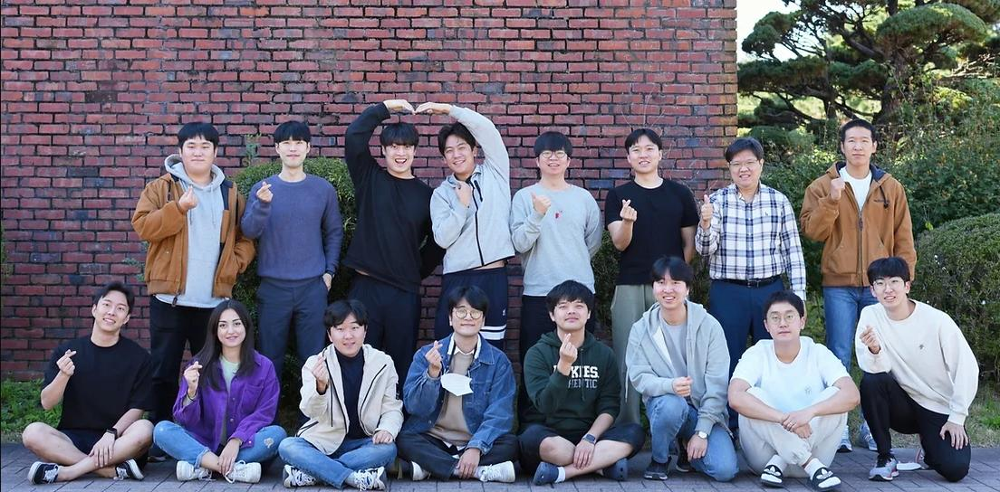

Research Engineer
DRCD Lab(Hubo Lab), Advisor : Professor Hae-Won Park

A photo with the lab members!
- Conducted research "Invariant Smoother for Legged Robot State Estimation with Dynamic Contact Event Information." (Under review by IEEE Transactions on Robotics)
We designed invariant smoother for legged robot state estimation with full consideration of the group-affine property and dynamic contact events in legged locomotions. The proposed algorithm showed up to a 27 % decrease in relative translation errors, an 11 % decrease in relative orientation errors, and a 26 % decrease in average velocity errors compared to the state-of-the-art algorithms. [Supplementary Video]
- Studied learning-based control under Professor Jemin Hwangbo.
June 2021 - December 2022
Undergraduate Research Intern
Wave Lab, Professor Wonju Jeon
- Studied Acoustic Black Hole(ABH), Piezoelectricity, and Energy Harvesting.
- Conducted Optimization of attaching piezoelectric patch on ABH-based harvester.
- Gave an oral presentation in TKT Asia Research Symposium 2020.
July 2018 - March 2019